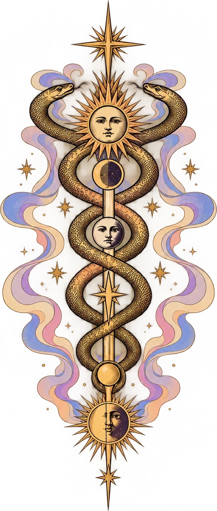
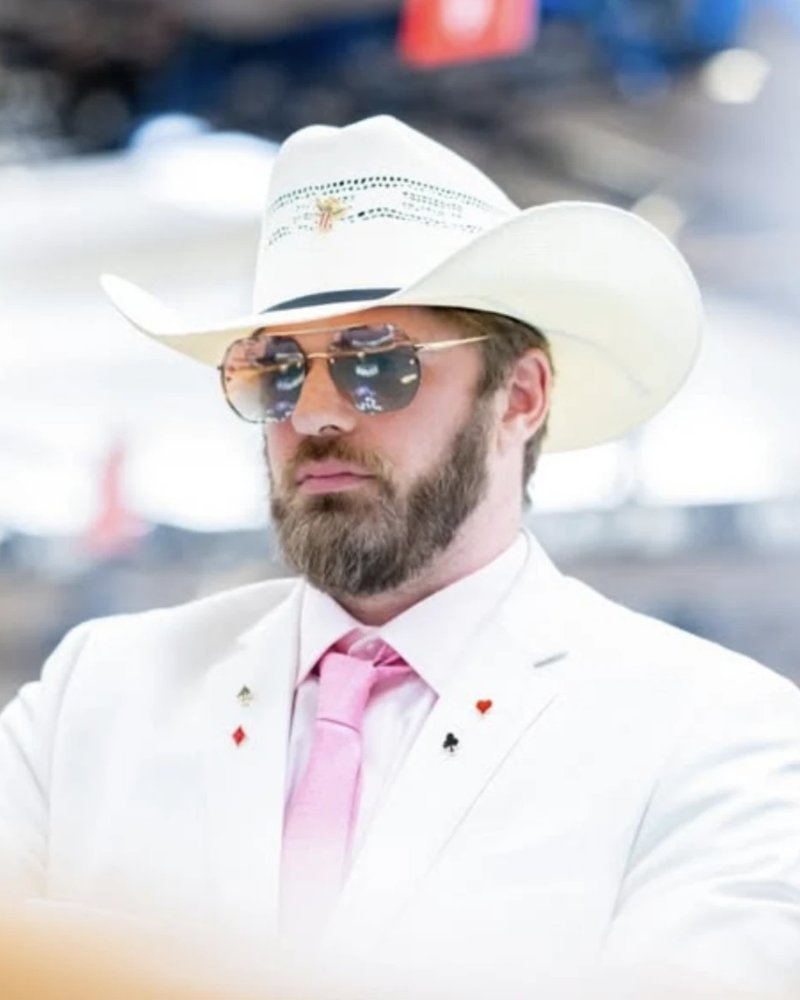
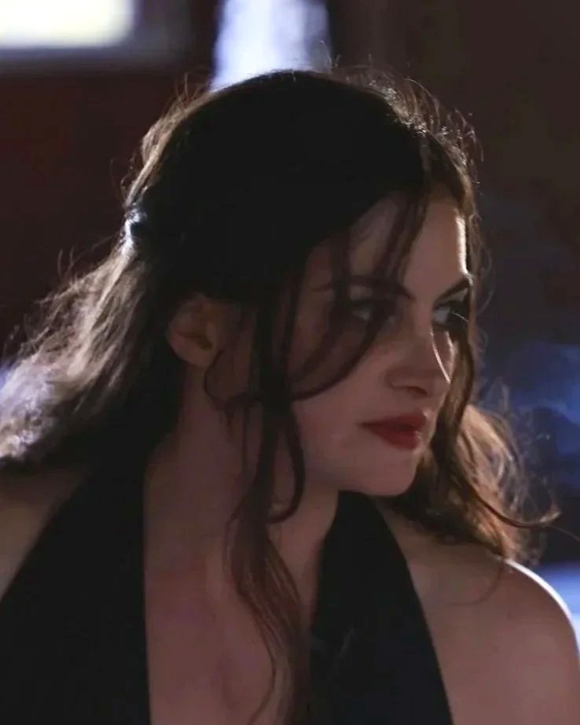
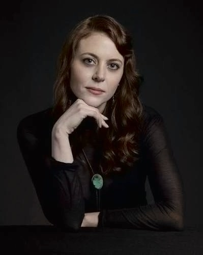
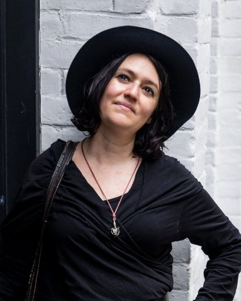

Mischief and Glory, Inc.
New York City 𐫰 San Francisco
The last theater nonprofit before the Singularity.

Mission
We fund theater for the new millennium. We are inspired by religion, video games, and genre art—mediums with an unreasonable ability to inspire life-changing devotion in the beholder.
Our goal is to create a culture tunnel between the two coasts, so that Bay Area patrons interested in cultural change, artistic influence, and unusual private experiences can meet theater savants from the other side.
“Cosimo de Medici famously remarked that one must treat artists of extraordinary genius like celestial spirits rather than beasts of burden.”
About Us
MISCHIEF AND GLORY, INC. is the nonprofit arm of The Classics Department, the group that brought you Bet on Love, a show that Grimes called “the future of reality TV x theater” and Scott Alexander described as “some kind of extremely well-done genre-bending reality show slash off-Broadway musical.”
We have been hired by people like Emmett Shear (former CEO of Twitch), Manifold Markets, and MIRI to create insane, high-spectacle experiences that speak directly to Bay Area culture.
Morgane Ciot
Writer and director of numerous Classics Department productions, including Bet on Love, Psychomagic 9, and The Golden Calf. Her work has been featured at SXSW Film & TV festival, ChaShaMa gala, and SIFF + Museum of Pop Culture Science Fiction.

Duncan Horst
Writer, performer, poker influencer, and corporate ritual magician. He is a rapper with the Legendary Cyphers in NYC, a former Wall Street trader and a collaborator of Chris Wink, founder of the Blue Man Group.

Alice Maynwaring
Ritualist, writer, performer; producer for the Classics Department and creator of Fielding’s Hollow, an intense, paranoiac role-playing experience that people consistently describe as “life-changing,” “miraculous,” and “mind-bending.”
Two girls and one male muse
We are outsiders with decades of experience in theater, game design, improv, ritual, and high-concept social experiments. Our sensibility is puckish, cosmic, and maximalist; it draws on an unusually broad vocabulary spanning art films, video games, esoterica, graphic novels, and “tech.”
We refuse to pander to our audience and we hold ourselves to a high standard. Our goal isn’t just to entertain, but to make art that people will remember for the rest of their lives.
If you work for a company that thinks humanity could be annihilated by the merciless logic of superhuman evolution in the next few years: thank you for your service! We want to live fast and die young, but glory is capital-intensive and we need your glorious money to make glorious art before the world enters into permanent hyperflux!
Board of Directors

Ashley Brett Chipman
Writer, director, and artist drawn to beautifully strange worlds, Ashley is the creator and director of the sold-out immersive hit Death of Rasputin. With over a decade of experience in theater, film, and television, her credits include M. Night Shyamalan’s Servant and FX’s American Horror Stories.
Douglas Rushkoff
Media and technology theorist named by MIT Technology Review as one of the world’s top 10 most influential thinkers.

Becki Heller
Business and Marketing expert with over a decade and a half of experience in TV, theater, film, and immersive, including NBC Universal, The McKittrick Hotel (home of Sleep No More), Tribeca Festival, Julliard, and P&G’s billion dollar brand Tide.
MISCHIEF AND GLORY, INC. is a 501(c)(3) incorporated in the state of New York.
However, we still need to obtain federal tax-exempt status from the IRS, a process that can take up to six months. To move quickly, we’re working with Counterpart, a well-regarded fiscal sponsor, to receive tax-deductible charitable contributions in the meantime.